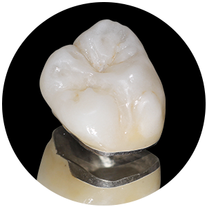
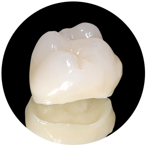

氧化鋯 vs. e.max：哪一種全瓷冠最適合你？
全瓷冠並非只有一種，市面上最主流的兩大系統——氧化鋯（Zirconia）與 e.max（鋰二矽酸鹽），在強度、透光性與適用位置上各有優勢。
還原牙齒的自然光澤與完美形態
生活牙醫診所特選歐盟高透光陶瓷製作全瓷冠，完美模擬天然牙的光學特性，無金屬黑線疑慮， 是最適合前牙區的假牙材質。從數位掃描到美學設計， 每一顆都是為您量身打造的藝術品。

全瓷冠是不含任何金屬的陶瓷牙套，透光性高，外觀與真牙幾乎無異，是現代美學牙科的前牙假牙首選修復方案。
全瓷冠（All Ceramic Crown）是以全陶瓷材質製作的牙冠修復體，完全不含金屬成分，不怕金屬過敏或刺激牙肉。相較於傳統金屬烤瓷冠，全瓷冠的透光性更接近天然牙齒的釉質，在光線照射下能呈現自然的半透明質感，從任何角度看都難以分辨修復與真牙的差異。
若您有輕微齒列不整或齒型不佳的狀況，也可以利用全瓷冠來進行修正齒型，打造更完美的微笑黃金曲線。

生活牙醫診所將製作流程SOP標準化，從術前模擬到精密製作，確保每個步驟精準至公釐。


|
 |

|
 |
|
|---|---|---|---|
| 比較項目 | 金屬烤瓷冠 | 全瓷冠推薦 | 全鋯冠 |
| 美觀透光性 | ● 牙齦易黑線 | ◎ 最佳透光 | ◎ 稍微透光 |
| 強度耐用度 | △ 中 | △ 中 | ◎ 特高（後牙為主） |
| 生物相容性 | △ 金屬過敏風險 | ◎ 極佳 | ◎ 極佳 |
| X光透視 | ✕ 金屬遮蔽 | ◎ 可清楚檢查 | ◎ 可清楚檢查 |
| 適用位置 | 前後牙 | 前牙最佳 | 後牙最佳 |
Digital Smile Design 讓您在治療開始前，先透過數位技術預覽最終效果，真正做到「所見即所得」。
DSD（數位微笑設計）是一套以高解析度照片與影片為基礎的設計流程，由醫師與您共同規劃理想的微笑比例。我們分析您的臉型、嘴型、牙齦線，設計出最適合您個人特質的笑容。
修復前，您將看到模擬完成後的 3D 影像；在臨時冠階段，您還可以實際感受修復效果，完全滿意後才進行最終製作，保障您的投資與期待。
多年來我們持續精進，只為給您最安心、最精緻的修復體驗

每個案例都有獨特的故事，我們驕傲地分享患者的轉變與笑容


整理諮詢時最常被問到的問題，協助您在治療前更清楚了解流程、費用與照護方式。
從材質原理到術後保養，我們整理了最實用的知識，幫助您做出最適合自己的決定。
全瓷冠並非只有一種，市面上最主流的兩大系統——氧化鋯（Zirconia）與 e.max（鋰二矽酸鹽），在強度、透光性與適用位置上各有優勢。
剛戴上全瓷冠的頭幾天，牙齒可能有輕微敏感或異物感，這是正常的適應期反應。正確清潔習慣與飲食調整，能讓修復成果長久維持。
「全瓷冠會不會很容易裂掉？」「做全瓷冠需要磨很多牙嗎？」「做完之後可以吃滷肉飯嗎？」整理診間最常被問到的疑問。
預約初診諮詢，由醫師親自評估您的狀況，為您規劃最適合的全瓷冠修復方案。無需承擔任何壓力，帶著您的疑問來，我們一起找到最好的解答。